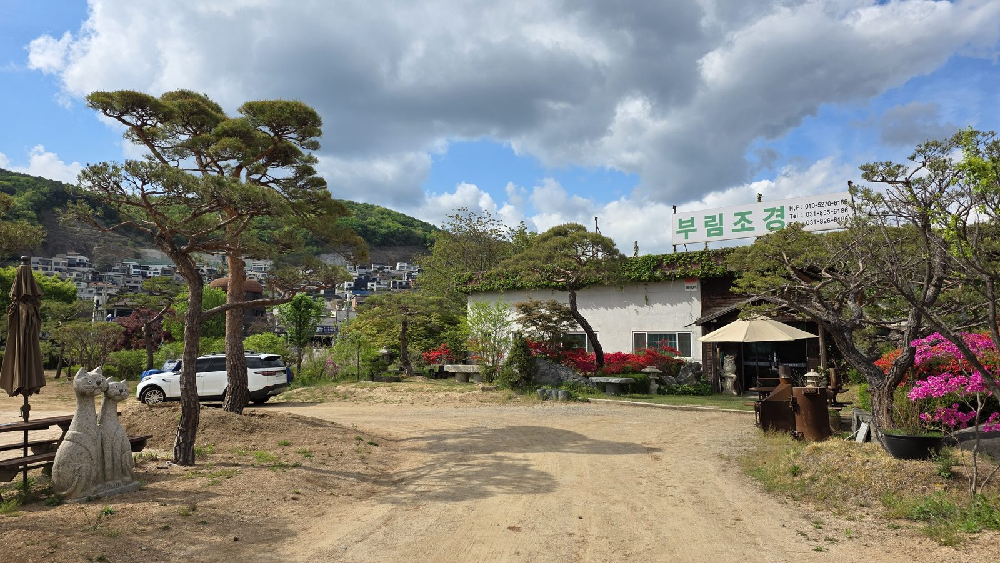
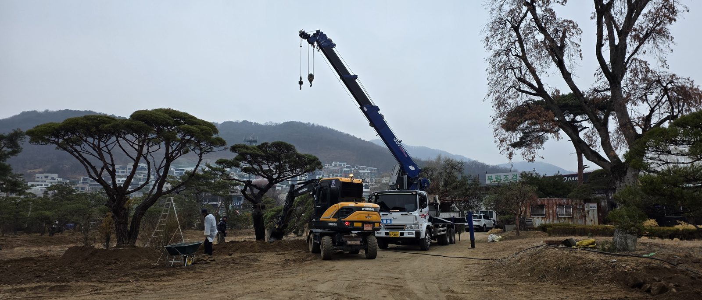

소나무 안내
조형소나무 가격은 왜 나무마다 다를까
한 줄 답
소나무는 단순히 크기만으로 가격이 결정되지 않습니다. 나무의 둥치, 분재와 같은 수려한 수형, 이식 횟수(단련목) 등에 따라 가격이 천차만별입니다. 그래서 가격보다 먼저, 식재할 자리와 용도에 맞는 수형의 나무를 고르는 것이 가장 중요합니다.
부림조경에 걸려 오는 전화에서 가장 많이 듣는 질문이 "그 소나무 얼마예요?"입니다. 그런데 소나무는 공산품처럼 정가가 있는 물건이 아닙니다. 인터넷에 올라온 가격표만 보고 판단하기 어려운 이유를, 40년 동안 소나무를 고르고 심어 온 경험으로 정리했습니다.
규격 표기 읽는 법: H, W, R
조경수를 거래할 때 소나무는 보통 세 가지 숫자로 크기를 표기합니다. 견적서나 판매 목록에서 "H3.0 × W2.0 × R20" 같은 표기를 보셨다면 이렇게 읽으시면 됩니다.
- H · 수고
- 땅에서 나무 꼭대기까지의 높이(m)입니다.
- W · 수관폭
- 가지가 옆으로 퍼진 폭(m)입니다. 조형소나무는 높이보다 폭이 넓은 경우가 많습니다.
- R · 근원직경
- 뿌리 바로 위, 땅과 닿는 부분의 줄기 지름(cm)입니다. 나무의 나이와 굵기를 가늠하는 기준이 됩니다.
규격은 가격의 출발점일 뿐입니다. 같은 규격이라도 실제 가격은 아래 요소들에 따라 크게 달라집니다.
둥치와 수형: 분재 같은 나무일수록
조형소나무는 오랜 세월 가지를 다듬고 순을 정리해 모양을 만든 나무입니다. 잘 가꾼 나무는 큰 분재를 보는 듯한 수려한 수형을 갖추는데, 같은 높이라도 다음과 같은 차이에 따라 가격이 천차만별로 달라집니다.
- 둥치 — 밑동이 굵고 힘 있게 뻗은 나무는 그 자체로 오랜 세월을 보여줍니다.
- 줄기의 곡선 — 자연스럽게 휘어진 줄기는 만들기 어렵고, 그만큼 귀합니다.
- 가지 층의 배치 — 층층이 고르게 펼쳐진 가지는 오랜 관리의 결과입니다.
- 정면의 완성도 — 소나무에는 가장 보기 좋은 "앞면"이 있습니다. 어느 방향에서 봐도 빈 곳이 없는 나무일수록 값이 올라갑니다.
이식 횟수: 단련목
여러 번 옮겨 심으며 뿌리를 다듬어 온 나무를 단련목이라고 합니다. 옮겨 심을 때마다 굵은 뿌리가 정리되고 잔뿌리가 촘촘하게 자라서, 새 자리에 옮겨 심어도 잘 살아납니다. 그만큼 오랜 시간과 손이 들어간 나무라 가격이 높습니다. 겉모습이 비슷해 보여도 이식 횟수에 따라 값이 달라지는 이유입니다.

생육 상태와 뿌리분
모양이 좋아도 건강하지 않으면 옮겨 심은 뒤 살아나기 어렵습니다. 잎의 색과 윤기, 새순이 고르게 나오는지, 병해충 흔적이 없는지를 봅니다. 뿌리를 흙과 함께 감싼 뿌리분이 단단하게 잘 만들어져 있는지도 중요합니다. 이식 후 활착에 직접 영향을 주기 때문입니다.
나무값 외에 더해지는 비용
소나무를 마당에 심기까지는 나무값 말고도 현장에 따라 달라지는 비용이 있습니다.
- 굴취·상차
- 농원에서 나무를 캐고 차에 싣는 작업입니다.
- 운반
- 나무 크기에 맞는 차량과 현장까지의 거리에 따라 달라집니다.
- 장비
- 큰 나무는 크레인이 필요합니다. 진입로가 좁거나 옹벽 위 마당이면 장비 조건이 달라집니다.
- 식재·고정
- 구덩이 작업, 흙 보충, 바람에 흔들리지 않도록 지주를 세우는 작업입니다.
그래서 부림조경은 정확한 견적을 현장을 직접 본 뒤에 드립니다. 같은 나무라도 어느 현장에 심느냐에 따라 총비용이 달라지기 때문입니다.

가장 중요한 것: 자리와 용도에 맞는 나무
비싼 나무가 곧 좋은 나무는 아닙니다. 정원 한가운데 상징이 될 나무와 진입로나 담장을 따라 심을 나무는 어울리는 수형이 다릅니다. 집의 분위기, 마당의 넓이, 보는 방향까지 함께 봐야 나무가 제자리를 찾습니다.
식재할 자리와 용도에 맞는 수형의 나무를 선택하는 것이 가장 중요하며, 축적된 경험과 전문성으로 최상의 조화로움을 창조합니다.
— 부림조경 대표
가격을 문의할 때 알려주시면 좋은 것
아래 내용을 함께 말씀해 주시면 전화로도 대략적인 방향을 빠르게 안내드릴 수 있습니다.
- 놓을 자리와 용도정원 가운데 상징목인지, 진입로나 담장 쪽인지
- 원하는 대략적인 크기높이 정도만 알려주셔도 됩니다
- 현장 주소와 진입 조건차량·크레인이 들어갈 수 있는지, 마당이 옹벽 위인지
- 현장 사진있으면 훨씬 정확하게 안내드릴 수 있습니다
직접 보고 고르는 것이 가장 정확합니다
부림조경은 경기도 양주시 장흥면 농원에서 소나무를 직접 관리합니다. 사진으로는 수형의 입체감과 나무 상태를 다 알기 어렵기 때문에, 방문하셔서 직접 보고 고르시기를 권합니다. 전화 주시면 방문 일정을 안내해 드립니다.
자주 묻는 질문
같은 높이의 소나무인데 가격이 크게 차이 나는 이유는 무엇인가요?
소나무는 단순히 크기만으로 가격이 결정되지 않습니다. 나무의 둥치, 분재와 같은 수려한 수형, 이식 횟수(단련목) 등에 따라 같은 높이라도 가격이 천차만별입니다.
단련목이란 무엇인가요?
여러 번 옮겨 심으며 뿌리를 다듬어 온 소나무를 단련목이라고 합니다. 이식할 때마다 굵은 뿌리가 정리되고 잔뿌리가 촘촘하게 자라 새 자리에 옮겨 심어도 잘 살아나며, 그만큼 시간과 손이 많이 들어 가격이 높습니다.
소나무 가격을 전화로 문의할 때 무엇을 알려주면 좋나요?
나무를 놓을 자리와 용도, 원하는 대략적인 높이, 현장 주소, 차량이나 크레인이 들어갈 수 있는지를 알려주시면 가장 빠르게 안내드릴 수 있습니다. 현장 사진이 있으면 더 정확합니다.
소나무를 직접 보고 고를 수 있나요?
네. 부림조경은 경기도 양주시 장흥면 농원에서 소나무를 관리하고 있어, 전화로 방문 일정을 잡으시면 수형과 상태를 직접 보고 고르실 수 있습니다.